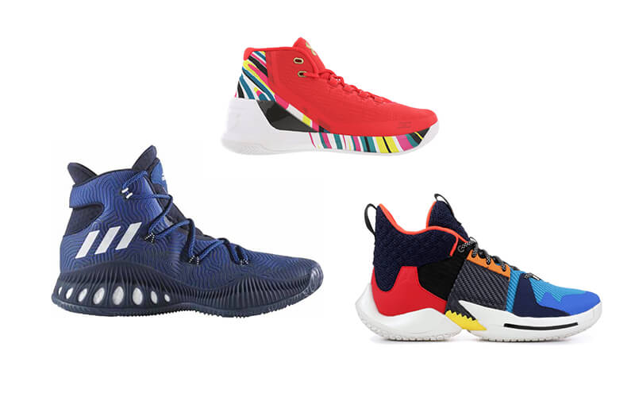
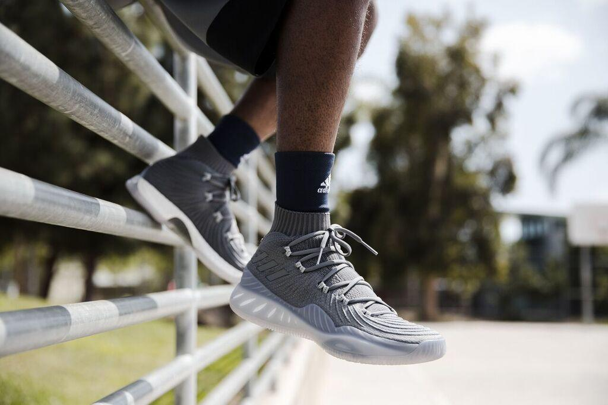
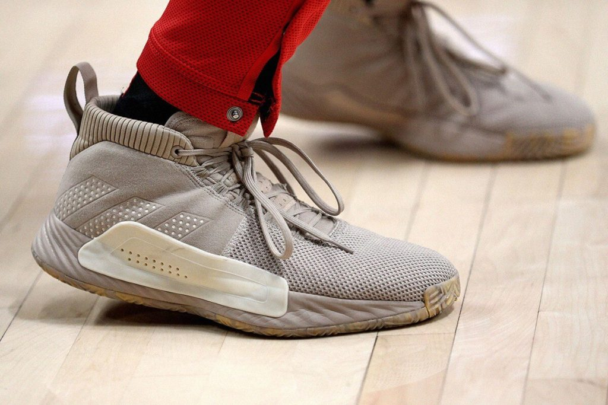
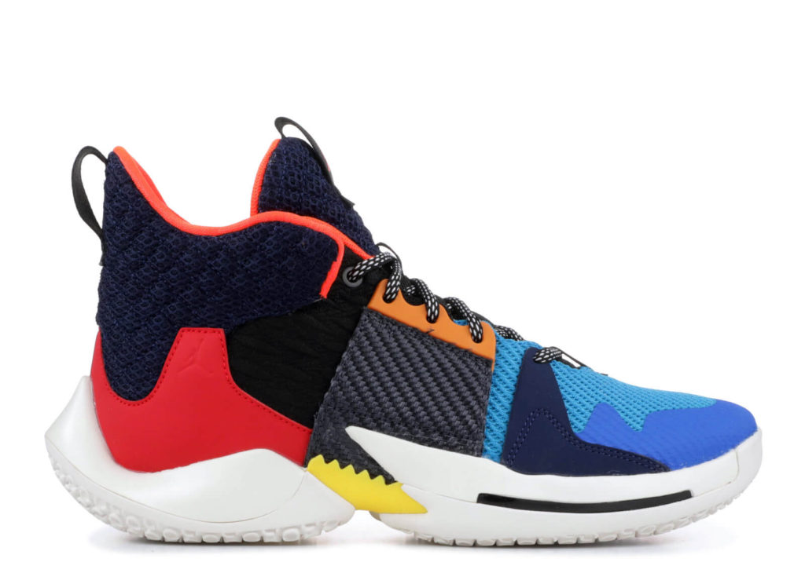
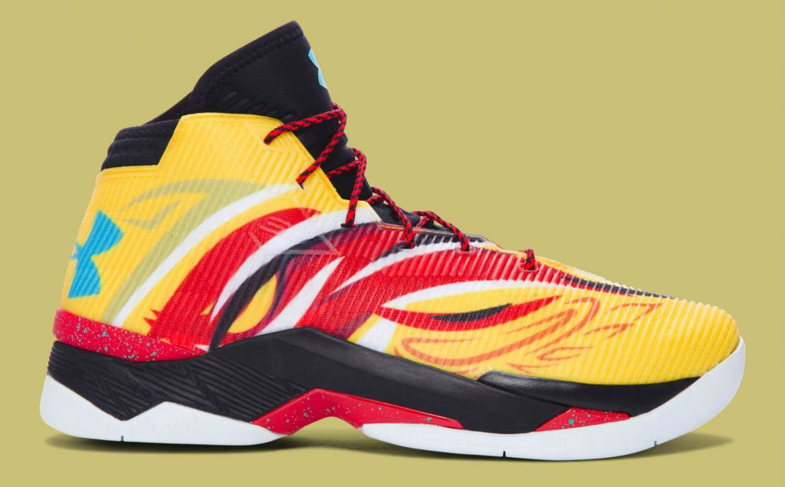
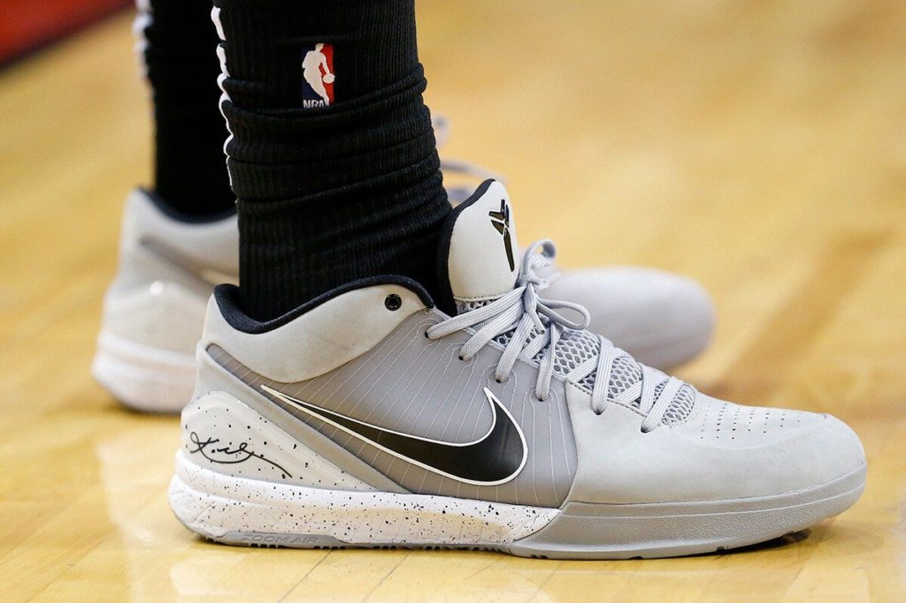

Những đôi giày bóng rổ đẹp nhất hiện nay

By Thạch Lee | 5/12/2020
Tổng hợp những đôi giày bóng rổ đẹp nhất 2020 dành cho các tín đồ của thương hiệu NIKE,
ADIDAS, CONVERSE và FOOT LOCKER.
Món đồ quan trọng nhất mà mọi cầu thủ bóng rổ đều cần là một đôi giày bóng rổ chắc chắn để chơi trên sân. Chúng tác động trực tiếp đến trò chơi bằng cách cung cấp lực kéo, sự thoải mái và thể hiện phong cách của cầu thủ sở hữu nó. Chính vì thế mà việc chọn một đôi giày vừa đẹp lại hiệu suất cao rất quan trọng.
Món đồ quan trọng nhất mà mọi cầu thủ bóng rổ đều cần là một đôi giày bóng rổ chắc chắn để chơi trên sân. Chúng tác động trực tiếp đến trò chơi bằng cách cung cấp lực kéo, sự thoải mái và thể hiện phong cách của cầu thủ sở hữu nó. Chính vì thế mà việc chọn một đôi giày vừa đẹp lại hiệu suất cao rất quan trọng.
1. Adidas Performance Men Crazy Explosive

Năm phát hành: 2017
Hãng: Adidas
Giày bóng rổ Performance Male Crazy Explosive của Adidas là loại giày hiệu suất cao, có khả
năng phản hồi cực tốt để đảm bảo sự thoải mái khi đeo và tốc độ khi chơi. Primeknit Xeno
phía trên không chỉ nhẹ mà còn cực kỳ thoải mái và thoáng khí, giữ cho bàn chân của bạn luôn
mát mẻ và khô ráo kể cả ngày dài. Hệ thống ren ở gót chân cùng với một miếng đệm sẽ giúp
khóa chân bạn vào trong giày để đảm bảo có độ trượt tối thiểu.
Lớp lót bên trong cực kỳ thoải mái và lưỡi lưới làm tăng thêm độ thoáng khí cho giày. Phần
đế làm bằng cao su để tăng cường lực kéo và sự thoải mái của giày. Đế cao su của giày cung
cấp cho bạn một lực kéo đặc biệt và đảm bảo rằng bạn có thể di chuyển nhanh chóng, cắt, dệt
mà không sợ bị trượt hoặc ngã.
Có thể nói, Adidas Performance Men Crazy Explosive là một trong những đôi giày bóng rổ đẹp
nhất 2020, lạ mắt, hỗ trợ tốt, hiệu suất cao đáng để các tín đồ chơi bóng rổ tìm hiểu và sở
hữu.
2. ADIDAS DAME 5

Ngày phát hành: ngày 1 tháng 2 năm 2019
Hãng: Adidas
Đôi giày đặc trưng mới nhất của Damian Lillard cũng sử dụng thiết kế lực kéo xương cá từ gót
chân đến ngón chân tạo độ bám tối đa. Hiện tại, Dame 5 có hai tùy chọn chất liệu: lưới và
da. Các phiên bản lưới có trọng lượng nhẹ hơn một chút, nhưng không đáng kể trong khi đó
phiên bản da mang lại cho người dùng hiệu suất hoạt động tốt hơn. Có thể nói, đây là một mẫu
giày chất lượng, giá rẻ mà các bạn nên mua trong năm 2019 này.
3. JORDAN WHY NOT ZER0.2

Ngày phát hành: 10 tháng 1 năm 2019
Hãng: Nike
Mẫu giày đặc trưng của Jordan có tên Why Not Zer0.2 vừa chính thức phát hành vào ngày 10
tháng 1 năm 2019 với đầy đủ kích cỡ khác nhau. Điểm đặc biệt nhất của mẫu giày này là màu
sắc đa dạng giống như phong cách quần áo Russell Westbrook. So với phiên bản 1, Why NOt
Zero.2 có thể nói là được thay đổi rất nhiều. Chính vì vậy, chúng ta không thể phủ nhận rằng
Jordan Why Not Zer0.2 là một trong những đôi giày đẹp nhất thế giới tính tới thời điểm hiện
tại.
4. Under Armour Men’s Curry 2.5

Năm phát hành: 2016
Hãng: Nike
Được đánh giá là một trong những đôi giày bóng rổ đẹp nhất từ ngày phát hành đến nay. Under
Armour Mens Curry 2.5 không chỉ sở hữu thiết kế mới mẻ, độc đáo mà còn là một đôi giày nhẹ,
ổn định và thoải mái.
Mẫu giày có bộ đệm gót chân bên ngoài để tăng thêm sự ổn định, hỗ trợ mắt cá chân tuyệt vời.
Chất liệu vải trên cùng giúp chống ma sát ETC giúp giữ cho bàn chân của bạn luôn mát mẻ và
khô ráo trong khi miếng lót OrthoLite chống vi khuẩn được đặt xung quanh bàn chân để tạo sự
thoải mái và giúp chân ổn định hơn. Mặt khác, đệm tích điện không chỉ làm giảm tác động khi
giày hạ xuống sân mà còn giúp chuyển đổi thành năng lượng để cung cấp cho bạn khả năng phản
ứng và tốc độ tuyệt vời trên sân.
Micro G được thiết kế trên toàn bộ chiều dài của giày không chỉ tăng thêm mức độ thoải mái
mà còn giúp bạn vượt qua đối thủ của mình một cách dễ dàng nhất. Mô hình lực kéo xương cá đa
hướng hỗ trợ độ bám tốt nhất trên mọi bề mặt sân bóng rổ. Phần đệm có hỗ trợ và sự ổn định
tuyệt vời là những gì mà bạn sẽ nhận được từ đôi giày bóng rổ này.
5. NIKE ZOOM KOBE 4 PROTRO

Ngày phát hành: 15 tháng 2 năm 2019
Hãng: Nike
Kobe 4 mở ra một cuộc cách mạng thời trang đỉnh cao của bóng rổ với phiên bản Protro (hiệu
suất Retro Retro) của mẫu giày tiên phong pha trộn các yếu tố cũ với mới. Cụ thể, Nike đã sử
dụng mô hình lực kéo xương cá ở phần gót, công nghệ Flywire và da tổng hợp. Không những vậy,
thương hiệu này còn thay đổi phần gót cao hơn và lực kéo ngoài rộng hơn cho Kobe 4 với mục
đích tăng hiệu suất khi sử dụng.
Tóm lại, giày Zoom Kobe 4 Protro là phiên bản cổ thấp và nâng cấp hiệu suất. Sở hữu vẻ ngoài
thẩm mỹ và mang lại cho người dùng một cảm giác chân mịn màng, nhạy bén và thoải mái cả ngày
khi đi nó.
Bạn là tín đồ của thương hiệu nào? Bạn cảm thấy ấn tượng với mẫu giày nào trong những đôi
giày bóng rổ đẹp nhất 2020 này? Hãy cho chúng tôi biết bằng cách để lại bình luận ở bên dưới
bài viết này nhé.